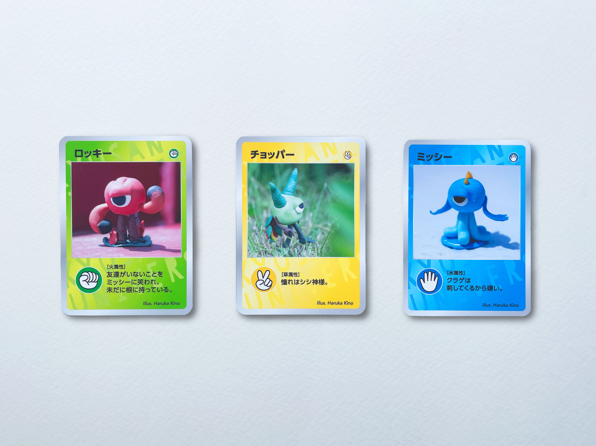
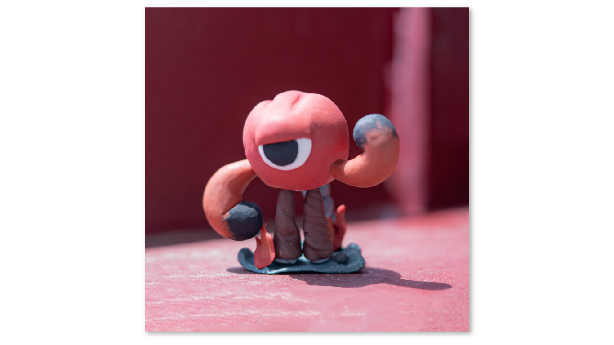
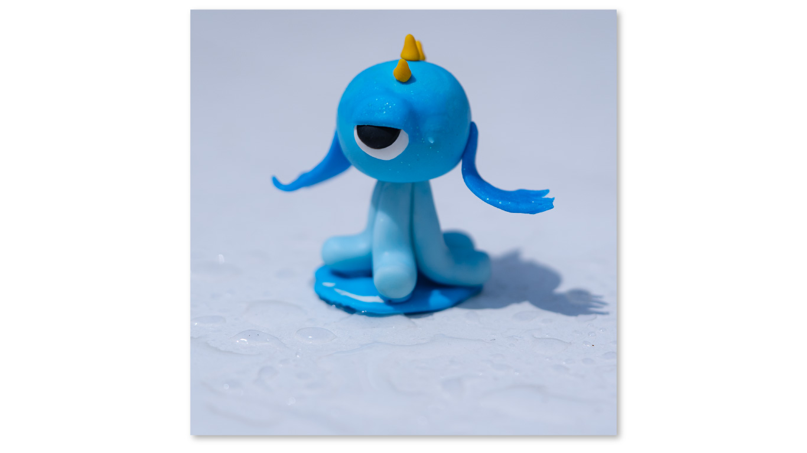
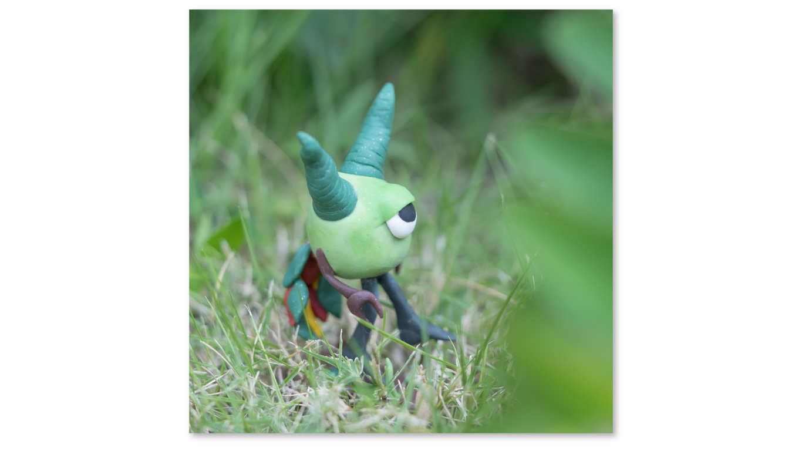

ZYANKEN
樹脂粘土/ジャンケンをモチーフにした一つ目
clay
集中講義の授業で、樹脂粘土の作品を制作しました。
粘土作家の森井ユカ先生にお越しいただき、油粘土、小麦粘土、紙粘土、樹脂粘土を触ってそれぞれ作品を制作しました。最終課題として、ジャンケンをモチーフにした３体のキャラクター制作を行いました。
私は、じゃんけんの手の形に着目し、手の形をイメージした３体の一つ目の怪物に仕上げました。３体の色や性格に合わせた背景でビジュアルを撮影、ユカ先生がそれらでカードを作成し、カードを使用したじゃんけん大会を授業の最後に行いました。
立体物の制作はほとんど経験がなく、粘土のこね過ぎにより、マウス以外で手が痛くなったことに感動しました。
集中講義を通じて立体物の面白さを実感することができました。
制作期間：１日



